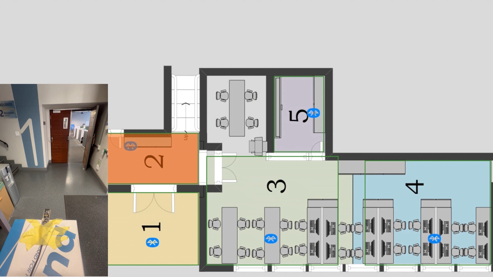
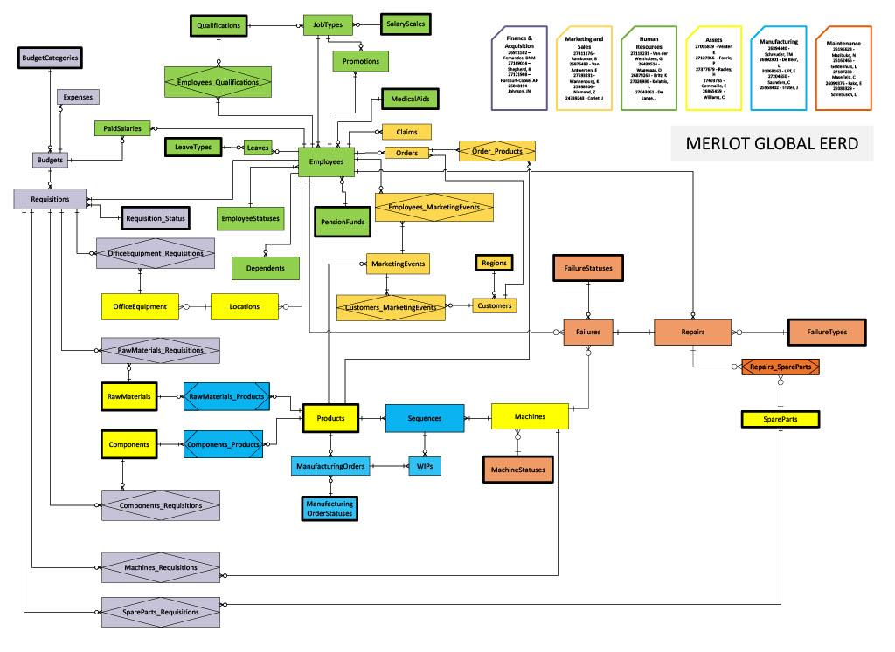
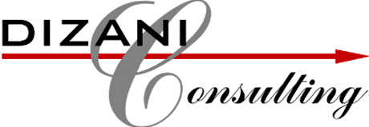

Emmanuel Fako
Industrial Engineer
Data-driven operations and process improvement, turning complexity into clarity.
About Me
I am a final-year BEng Industrial Engineering student at Stellenbosch University (completing in 2026), working at the intersection of operations improvement, software systems, and data analytics.
Across two factory internships and a range of engineering builds, my work spans production-floor Lean and OEE turnarounds, ESP32-based IoT telemetry and machine learning pipelines, relational MS SQL Server and C# .NET enterprise systems, and custom automation tools.
Featured Work
Selected builds across embedded IoT, enterprise databases, and manufacturing operations.

Final Year Project: BLESmart - Indoor Localisation & Occupancy Detection
Designed and validated a privacy-preserving Bluetooth Low Energy (BLE) pipeline using an ESP32-C6, MQTT, Node-RED, InfluxDB, and Grafana to track multi-room movement and estimate live lecture hall attendance.

Enterprise Resource Planning: Industrial Maintenance & Asset Management System
Architected an end-to-end ERP maintenance subsystem for manufacturing operations, integrating MS SQL Server relational modeling with a C# .NET desktop application across 9 core maintenance events and executive KPIs.

Internship 2025: Dizani x Coricraft x Beekman - OEE Optimization & Digital Tracking
Led process optimization initiatives at Coricraft and Beekman Canopies, digitizing performance tracking and driving laminating team OEE from 72% to over 90%.
Experience
Industrial Engineering Intern
Dizani Consulting · Beekman Canopy Division Jan 2025
- Conducted time studies on a fiberglass canopy laminating line to establish production baselines and isolate bottlenecks.
- Applied Lean Manufacturing and Value Stream Mapping (VSM) alongside workstation improvements to eliminate idle wait time.
- Contributed to raising Overall Equipment Effectiveness (OEE) from 72% to over 90%, formally recognised by site management.
- Established standardized performance metrics and visual tracking boards to sustain output gains.
Industrial Engineering Intern
Dizani Consulting · Coricraft Jan 2025
- Established standard cell times and implemented barcode-based workflow tracking into Dizani’s Per4ma operations platform.
- Cleaned, validated, and structured large product datasets to enable reliable shop-floor ticketing and throughput reporting.
- Optimized CNC wood-panel nesting yields using AlphaCam software to reduce raw material scrap.
Industrial Engineering Intern
Dizani Consulting · Alpine Furniture (Bravo Brands) Jan 2024
- Executed time and motion studies in foam cutting and identified Fibre Department rack orientation as the primary FIFO buffer constraint.
- Redesigned the physical storage layout so racks could be accessed from both sides, increasing local buffer capacity toward the plant’s 136-suite target.
- Replaced redundant racks in seaming with dedicated sorting tables to streamline downstream material handling.
Education
BEng Industrial Engineering · Stellenbosch University
2022 - 2026 (Final Year Completion)
Final-year thesis focused on privacy-preserving BLE edge telemetry and machine learning (BLESmart). Core coursework spans Systems & Information Systems Design, Data Analytics, Operations Research I & II, Simulation Modeling, Manufacturing Systems, Quality Management, Industrial Ergonomics, Production & Supply Chain Management, and Project Management.
Technical Skills & Tools
Systems, Software & Databases
IoT, Telemetry & Analytics
Operations, Lean & Quality
Engineering, CAD & Management
Certifications
Verified credentials across project management, relational SQL querying, and supply chain strategy:
Foundation Certificate in Project Management (ICB4)
Internationally benchmarked project planning, risk control, and stakeholder delivery standard.
Intro & Advanced SQL
Relational querying, window functions, nested joins, and query optimization for analytics pipelines.
End-to-End Supply Chain Excellence
Cross-functional S&OP decision-making across purchasing, inventory, operations, and ROI alignment.